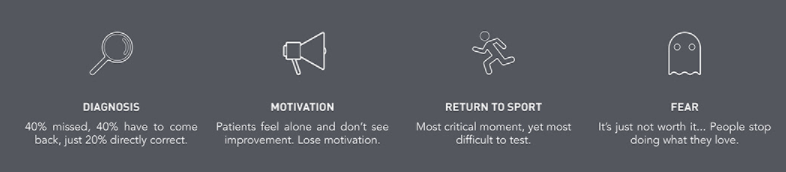
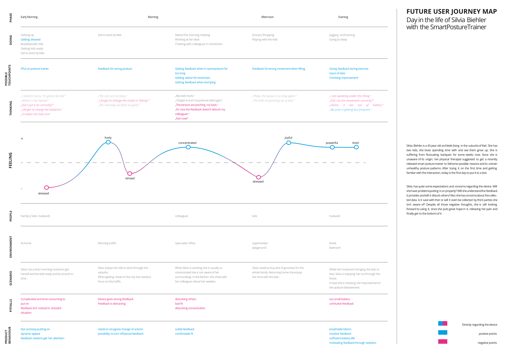
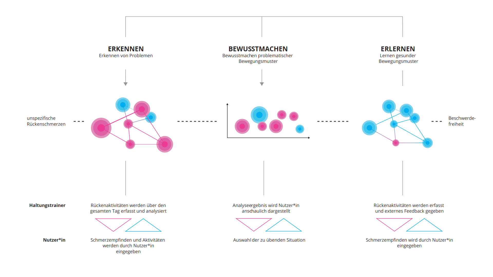
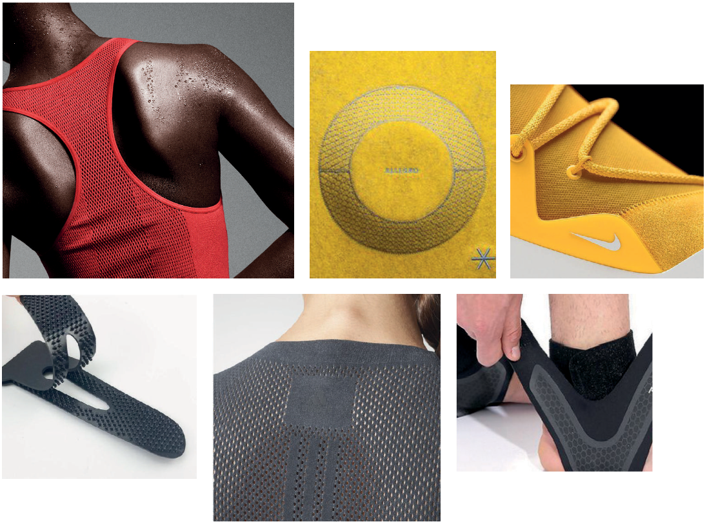

Expert interviews, Personas, User Journey Map, Clo3D
Background
The project took place within the research cluster "Centre for Tactile Internet with Human-in-the-Loop" (CeTI). The central vision of CeTI is to enable people to interact
in quasi-real time with cyber-physical systems in the real or virtual world via intelligent wide-area communication networks.
My goal was to investigate the potential of cyber-physical systems with multimodal feedback in pyhsiotherapy and rehabilitation to simplify processes and support motor
learning.
Research
Through guided interviews, I first gained an overview of the broad field of physiotherapeutic treatment methods and the course of a therapy. In this way, I was
able to identify initial problems and generate concept ideas from them.

Concept Development
Based on the research, I have developed three concept scenarios that extend widely used and mostly standardized treatment therapies by intelligent
multimodal feedback.
The concepts were then evaluated in an expert workshop with physiotherapists. All concepts were discussed with great interest and evaluated and refined in
various sessions.
In the end, the preferred concept of the posture trainer was selected and concretized with the help of the experts.
Refinement

In order to achieve a user-centered design of the posture trainer, the first step in the development was to take a closer look at the context of
use with the help of a simplified user journey map in order to identify pain points and needs at an early stage.
Subsequently, a learning process was developed, which can support current treatments for back pain and thereby promote the learning of healthy movement patterns
through informational and behavioral intervention, with multimodal feedback.


Since the posture trainer is worn on the body, it must be able to adapt to the body and its movements.
The main material should therefore be a light, well-ventilated material. Overall, a discreet and sporty design was to be be achieved.